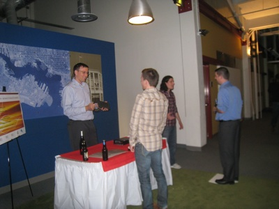

Presenter Information for Tech Crawl East
What do I need to do?
- Register as a Presenter by completing our Presenter Intake Form.
- Upload your logo to drop.io. Click the "Add" link and name the file with the same company name that you submitted.
- Pay the Presenter Fee by signing up for this EventBrite event.
- Prepare your Pitch: each table will have a "home base" set up for attendees to step on to hear your pitch. Whenever anyone steps up, you should be prepared to give your 60-second pitch that answers these questions:
- What is exciting about your company or product?
- Who are you selling to?
- How does your customer benefit from your product?
- Are you seeking investment and how will you use it?
- Show off your product! this is a show and tell event. Attendees want to be able to experience your technology.
- Compile your marketing materials: each presenter will have a booth not all that dissimilar from a trade show. Bring your standard set of marketing posters, take-homes and business cards.
- Get pumped! this is an event to showcase you! Bring a load of energy and take advantage of the community coming to see you.
What is being provided to me?
Tech Crawl East will provide each presenter with the following:
- a 2 1/2 ft x 5 ft table with a skirt and tablecloth
- power and/or wifi (by request)
- we will be recording your pitch and posting it online after the event
Is there an agenda?
Yes, of course. Doors open at 5PM with food and beverages immediately available. The Crawl will begin at 5:30PM and run until 7:30PM. Award for the best pitch will be announced at 8:00PM. Presenters are encouraged to arrive at Morgan Stanley between 3:00PM and 3:30PM to begin setting up their tables. If your particular setup requires more time, feel free to arrive earlier than that.

A sample booth setup. We are providing a table, skirt, cloth and base.
Each presenter will be best served by having at least two people at the booth. At any given time, one person should be prepared to pitch to anyone who steps up to the plate, and the other should be there to talk casually to attendees and hand out marketing material.